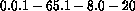

Processing recipe: Mosaicing at 21 cm


This recipe suggests a way for making a 21-cm continuum mosaic map. In this example, a particular field was chosen where there were many previously-known radio sources within the region to be mapped. Hence, we knew that there was sufficient flux-density for almost all of the pointing centres to allow us to run selfcal. If the user is not sure of having enough SNR for this, a modified version can be used. Hence, consider this recipe as just a starting point, and add salt to your taste.

In the mosaic mode of observation, during one 12-hour period the telescopes, along with the fringe-stopping and the delay-tracking centres, cycle through a grid of pointings a number of times. In Fig 003.1, we used a 13 x 5 grid of these so called, pointing centres. There were about 21 cuts (or spokes), each containing two scans of 10-s duration for each pointing centre. The total 40-MHz bandwidth at 21 cm is usually divided into eight 5-MHz channels (although these are not contiguous). Hence, the data file had the following set indices (see also Ch 3.): 
For a particular pointing centre, the reduction methodology is very much the same as that in Recipe 004. However, all the maps are to be made using a common reference point (NMAP-option REFERENCE). Usually, for a large number of pointing centres, book-keeping etc. could be quite difficult. Here, all the advantages of the Automatic Batch Processing facility (ABP, Appendix D) can be very easily exploited. In the following section we detail all the steps, indicating the pre-ABP, the ABP, and the post ABP stages, Stage I, II and III respectively, that were used to generate the map in Fig 003.1. These three stages also coincide with the calibration using a different source, the Selfcal-Model formation loop for all the pointing centres, and the mosaicing stages.

STAGE I:
STAGE II:
This stage could be batch processed (APPENDIX D). In the following, we first write a name for each task, which briefly describes the function of the step too. Within the bracket, we mention the programme to be used, and comment on a few important input parameters. Depending upon the flux density of the strongest source in the map of a particular pointing centre, the Stage is stopped at various Exit points.
For each pointing centre:
Exit point 1: If the flux density of the strongest component, is less than limit 1 (12 w.u., here) - STOP - Proceed to next pointing centre.
Exit point 2: If limit 2 (20 w.u. here) - STOP - Proceed to next pointing centre.
Exit point 3: If  limit 3 (40 w.u. here) - STOP - Proceed to next pointing centre.
limit 3 (40 w.u. here) - STOP - Proceed to next pointing centre.
End of stage II
At this point, for all the pointing centres, one should have a good model list, and a residual map. The common model components in the overlapping region can be checked for positional agreement. These can be cross-checked against any source within the region whose accurate position is known from the literature. Usually, agreements within 1 arcsec was achieved at this stage, which was already 1/10 th of the synthesised beam.
Depending upon the quality of the maps, they can be grouped into four classes.
A. Good maps, where noise is already at the theoretical limit, though there may still be residual sources, and their grating rings and sidelobes.
B. Maps containing grating rings from sources beyond the mapped region.
C. Maps with bad scans.
D. Maps with amplitude or/and Phase calibration problems.
For Class B maps, make larger low-resolution maps and try to include the strong (offending) source in the model list, and then start again at the beginning of Stage I (retaining the 'outside sources', though).
For Class C maps, search out the bad data (no easy-solution, sorry), delete it, and start again.
For Class D maps, there may be spurious sources in the model-list. Plot them, (NPLOT) and try to locate suspects, delete these, and continue (refer to sec..... if this doesn't help).
STAGE III:
Once all the maps are of Class A-quality, do the following:
.
.
.
.
.
.
.
.
.
.
.
.
.
.
.
.
.
.
.
.